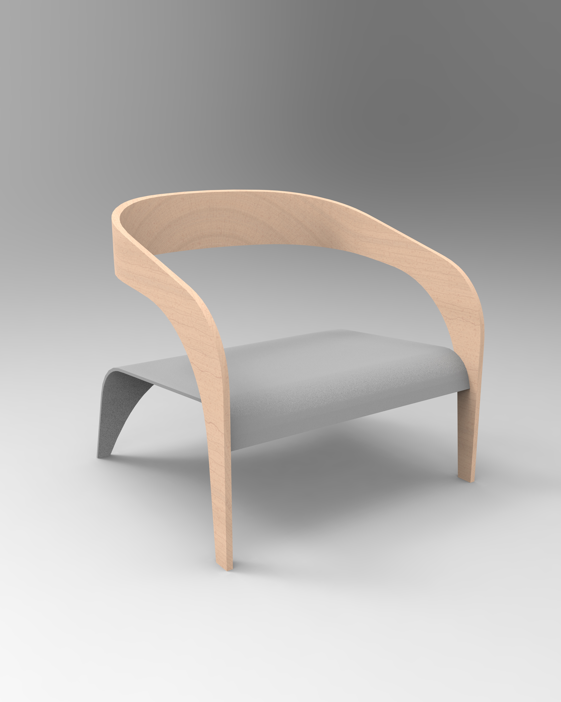
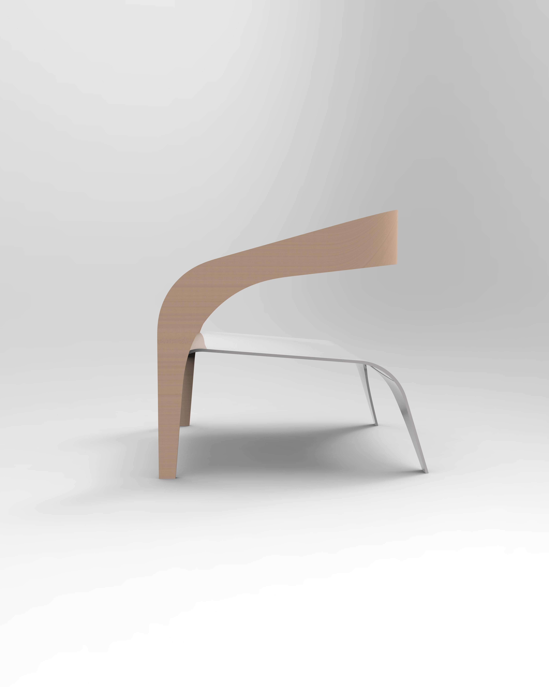
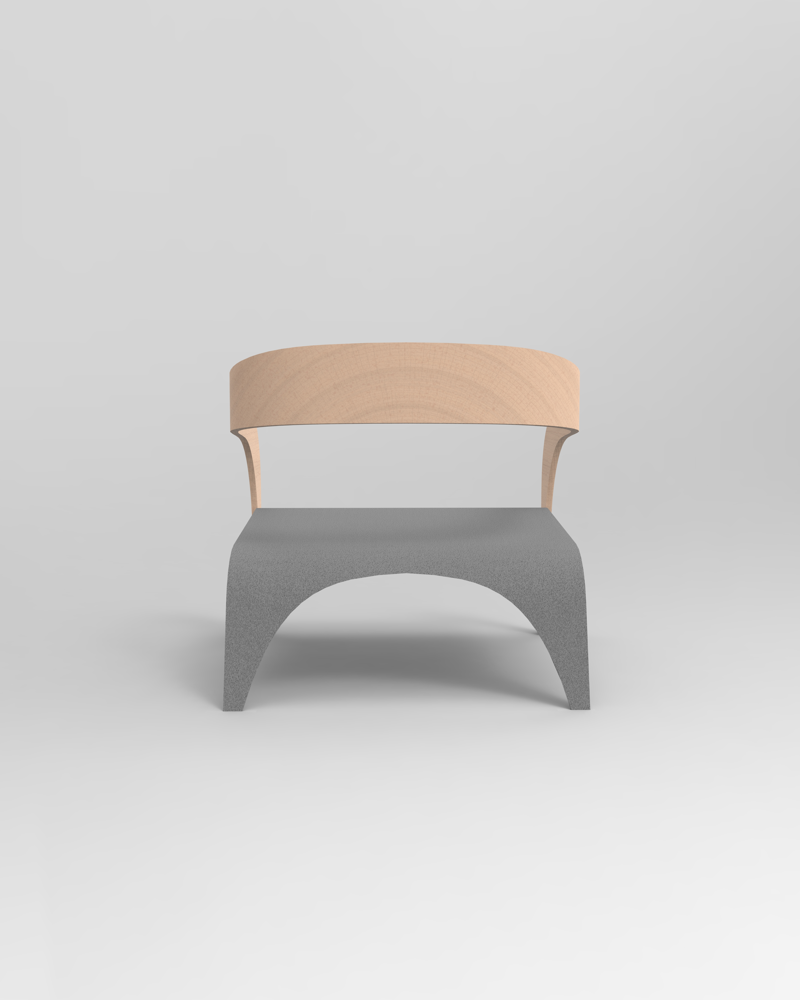
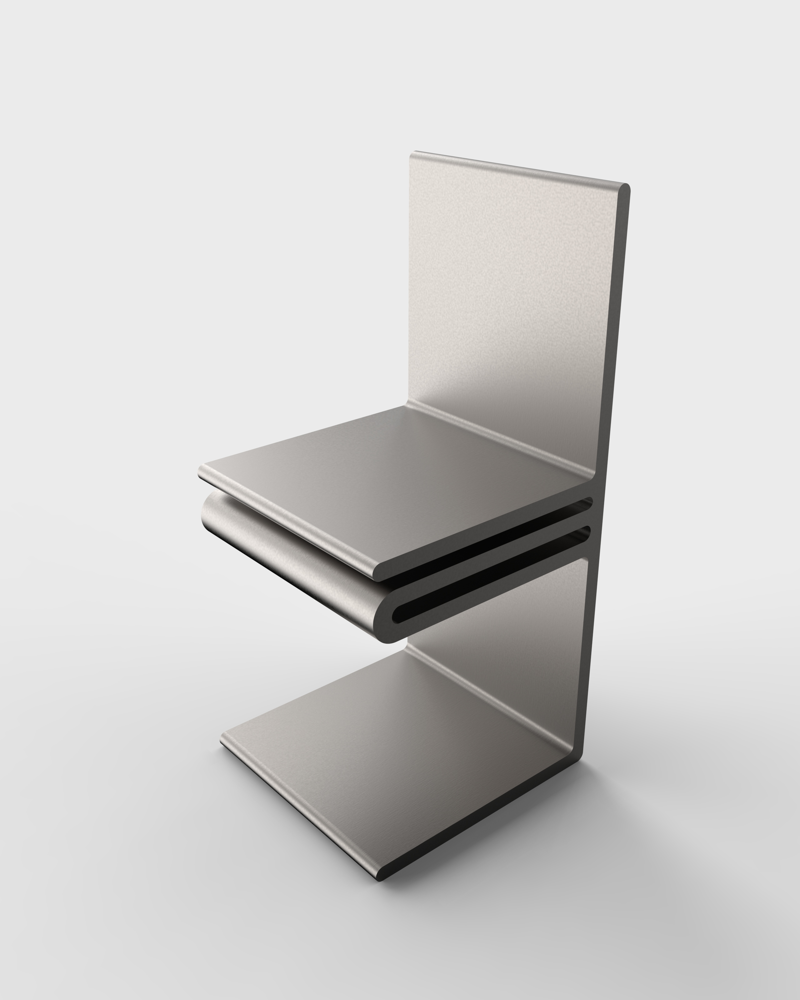
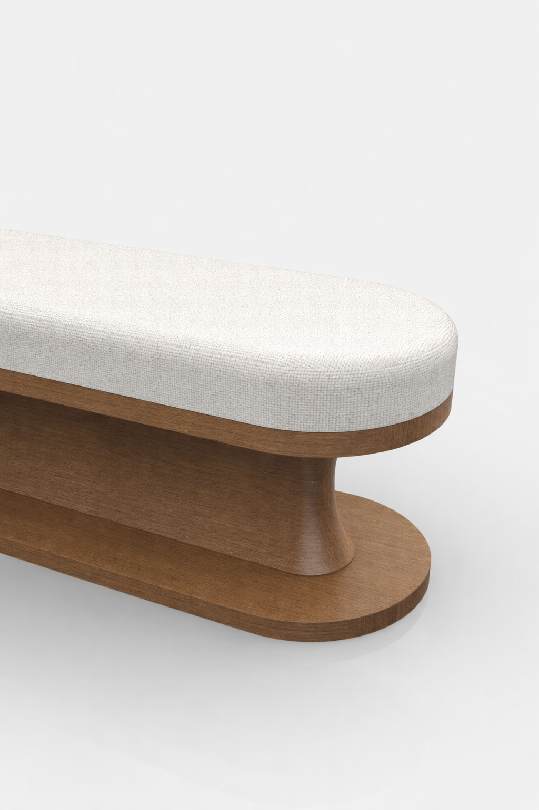
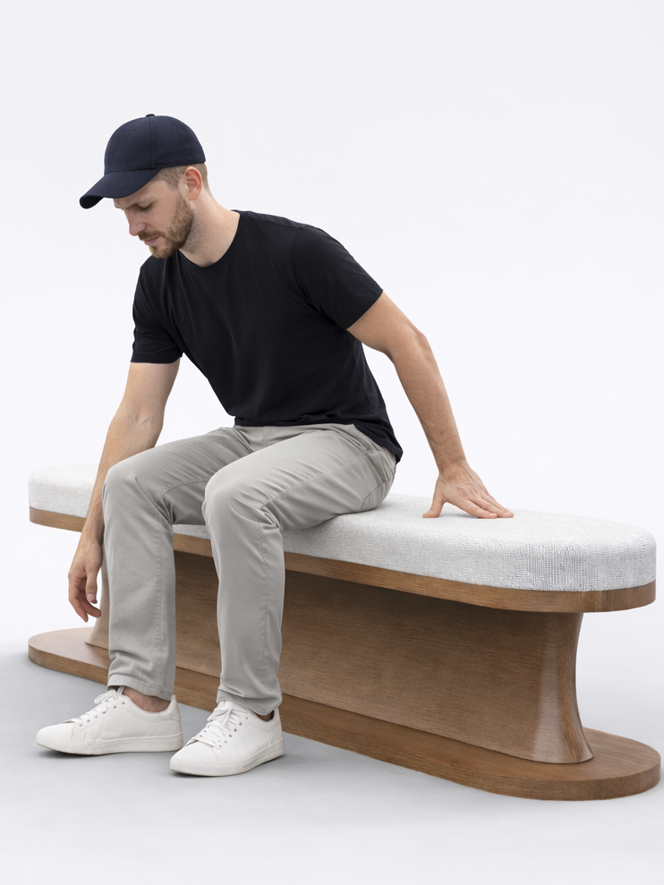
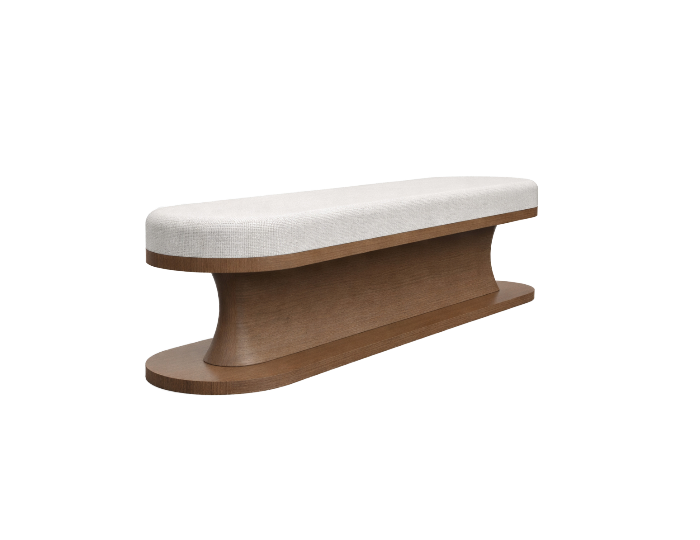

Bentwood Lounge Chair

This lounge chair is designed with a focus on fluid form and structural simplicity. The continuous curved frame creates a seamless transition between the legs, armrests, and back support, resulting in a unified and sculptural silhouette.
The main structure appears to be crafted from bent laminated wood, allowing smooth and controlled curves while maintaining strength and durability.


The seating surface is designed to be more flexible and comfortable; it's constructed from moulded plywood. The contrast between the rigid wooden frame and the softer seating surface establishes a balanced relationship between structure and comfort.
Rather than relying on complex detailing, the design emphasises clarity of form and the natural expression of materials.
Cantilever Metal Chair

This chair is designed with a focus on structural clarity and material expression. The form is defined by a continuous, bent metal surface that creates a seamless transition between the base, seat, and backrest.
The cantilever structure eliminates the need for rear legs, allowing the chair to achieve a visually light yet structurally efficient presence.
The chair appears to be constructed from a single sheet of metal, most likely aluminium, bent into shape. This approach emphasises precision, durability, and production efficiency. The material can be finished with a brushed or powder-coated surface, reinforcing its clean and industrial aesthetic.

Wooden Bench

This bench is designed with a focus on soft geometry and material warmth. The form is defined by smooth transitions and rounded edges, creating a continuous and fluid silhouette.
The base structure is crafted from solid wood or wood veneer, emphasising natural texture and a grounded presence. Its central support element subtly tapers and expands, giving the piece a sculptural quality while maintaining structural stability.


The seating surface is upholstered, providing a soft and comfortable contrast to the rigid wooden base. This combination of materials creates a balanced relationship between warmth, comfort, and durability.
Rather than relying on sharp lines or complex detailing, the design embraces simplicity and organic form.